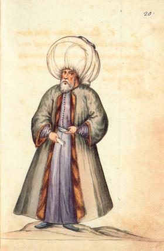

Biography Of Author

Allamah Mir Hamed Husayn
Introduction
The indefatigable struggle in the way of God and raising the flag of monotheism depending on temporal and local circumstances is a great task to which all our valorous leaders have devoted their precious lives. However, it has been for centuries that heroic figures from among great Shia scholars have kept pace with this task and have prevented it from stagnation even for a single day.
One of these indefatigable strugglers, practicing scholars and Shiite glorious figures is Allamah Mir Hamed Husayn who has a constant scholarly struggle in his good track record
Birth and Family
Sayyed Mir Hamed Husayn Hendi Nayshabouri is one of the great Shiite scholars, theologians and figures of honor who was born in Lucknow, India, in 1246 / 1830. He grew up in a family all of whose members were knowledgeable scholars and striving erudite. There also existed scholars committed in serving Islam among his brothers, children and grandchildren. From among this great family, some stars shone in the sky of knowledge and jurisprudence to show the way to the disoriented.
The following includes some of them:
a. His ancestor: Sayyed Muhammad Husayn known as Sayyed Allah-karam Musawi Gunturi Nayshabouri ( d. 1288 / 1871). He was one of the great jurists and ascetics in the second half of twelfth century, and was endowed with miraculous power. He was really interested in transcribing the Holy Quran and valuable books. The Quran, Haq al-Yaqin, Tuhfat al-Zaer, and Jame Abbasi by his handwriting are available in the Nasiriya Library in Lucknow, India.
b. His father; Mufti Sayyed Muhammad Quli Mousawi Gunturi Nayshabouri was one of the shining expert figures in the first half of the thirteenth century AH in the fields of beliefs and debates.
He (b. 1188 / 1775) was a prominent pupil of Sayyed Deldar Ali Niqvi (a great Shiite scholar in the thirteenth century AH) and a matchless researcher in many branches of knowledge and left precious works. He was also one of most eminent figures in theology and in debating and was unique in research. Sayyed Mohammad Quli died in Muharam 9 th 1260 / 1844 in Lucknow, India.
c. His senior brother: Sayyed Siraj Husayn like his father and brothers was counted among scholars and the cultivated. He studied under his father and Sayyed al-Olama. Most of his compilations are in mathematics including Solution for Algebra Equations and a treatise on curved conic sections. He was also a well-known philosopher and a physician.
Although engaged in Arabic sciences and early branches of knowledge, Sayyed Siraj Husayn was so versed in English language, modern philosophy and mathematics that made great figures in Britain wonder how a Muslim scholar mastered in western philosophy and science. He died in 1282 / 1865.
d. His other brother: Sayyed Ejaz Husayn, the middle child of Sayyed Mohammad Quli was born in Rajab 21 th 1240 / 1824. Similar to his father and brothers, he was one of the Shiite famous scholars in India and left many books as well. He contributed his brother, Mir Hamed Husayn in writing Esteqsa al-Afham in extracting the subjects and infering the purpuses to that extent that it was said: major tasks of the book were done by him but it was published under Mir Hamed Husayns name just because of his reputation. His other compilations include Shodhur al-Aqiyan fi Tarajem al-Ayan and Kashf al-Hujob wa al-Astar an Ahwal al-Kotob wa al-Asfar. After a short life but prosperous, he passed away in Shawwal 17 th 1286 / 1869.
e. His son: Sayyed Naser Husayn under the pseudonym of Shams al-Ulama (b. 1284 / 1867) was considered a follower of his father’s footsteps in knowledge and research, for he contributed in completion of Abaqat and compiled some of its volumes in his father’s style (i. e. made fair copies of his father’s drafts) and published them under his name.
Sayyed Naser Husayn was a proficient scholar, a jurist, a theoretician in law, a traditionist, an expert in Rijal science, a persevering researcher, a Mufti and also a religious authority for his people. He mastered all these branches of knowledge by studying under his great father together with Mufti Sayyed Muhammad Abbas. He died in 1361 / 1942 and according to his testament, was buried next to the tomb of Qazi Shushtari in Agra, India.
f. His other son; Sayyed Dhaker Husayn like his brother was also an erudite scholar, a literary man and a poet of his era and assisted his brother in completion of Abaqat. He left a collection of poems in Arabic and Persian and some glosses on Abaqat.
g. His two grandsons; Sayyed Muhammad Said and Sayyed Muhammad Nasir, the sons of Sayyed Nasser Husayn were also sages and scholars of their time, taught by prominent masters in Najaf, Iraq. Back to India, Muhammad Saied became the religious and scientific leader and left numerous books. He died in India in 1378 / 1958 and was buried next to his great father in the courtyard of Qazi Shushtari. But Sayyed Muhammad Nassir backed to India and chose political jobs to be the representative of the chamber of deputies by support of Shiite people. Passing away in Lucknow, India, his body was transferred to Karbala, Iraq and was buried in the tomb of Mirza-ye Shirazi in the courtyard of Imam Husayn( a. s).
His Education
Mir Hamed Husayn started his education at the age of six in an Islamic traditional school by Shaykh Karam Ali. After a short time, his father undertook educating him and taught him, from then until the age of fourteen, all common primary books. To fulfill his education after his fathers death, he sought other masters when he was fifteen. He studied Maqamat al-Hariri and Diwan of Mutanabbi under Mawlawi Sayyed Barakat Ali and also studied Nahj al-Balageh under Mufti Sayyed Muhammad Abbas Tustari. He studied religious sciences under Sultan al-Ulama Sayyed Muhammad b. Deldar Ali and his brother Sayyed al-Ulama Sayyed Husayn b. Deldar Ali-the two great Shiite jurisprudents in India- and also mastered rational sciences by studying with Sayyed Murtaza Sayyed al-Ulama under the pseudonym of Khulasat al-Ulama.
Then, he studied under his master Sayyed al-Ulama his outstanding book called Manahej al-Tadqiq on which the former added his annotations that show his efficiency in research and criticism. Anyway, after several years education that he set out to research. First, he edited and criticized his fathers works like Fotuhat Haydaria, Resala-ye Taqiyyah, Tashyid al-Mataen and spent lots of his lifetime to edit and collate these books particularly Tashyid al-Mataen- which is a rejection to Tuhfah Ethna Ashariyya.
Having not yet got through with his recent work, a book called Muntaha al-Kalam was published by a Sunni scholar called Mulawi Haydar Ali Faydabadi to reject the Shia with lots of extravagant publicity so that both professionals and the laymen were driven into a corner. On the one hand, the adversaries claimed that the Shiite cannot answer the allegations reported in this book, as its author claimed: The Shia cannot refute my book even if all of them gather. On the other hand, great Shia scholars of India including Sultan al-Ulama, Sayyed al-Ulama, Mufti Sayyed Muhammad Abbas Tustari could not answer because of the serious stance of the government against them and certain other observations. At this time, Mir Hamed Husayn entered the arena and to the surprise of the scholars and even his own masters wrote a rebuttal called Esteqsa al-Afham fi Naqd Muntaha al-Kalam within six months.
The opponents received such a serious blow from the publication of this book that none of them, even the author of Muntaha al-Kalam could rebut it, although they attempted many years, asked for assistance of[ their coreligionist] governors and held different gatherings.
Mir Hamed Husayn then authored Shawareq al-Nusous and later was engaged in authoring the great book Abaqat al-Anwar which took the rest of his life.
In 1282 / 1865, he set out for Hajj pilgrimage and then visited the holy shrines in Iraq. He was not stopped there from doing scholarly activities and researches so that he took notes out of rare books in the libraries of the two holy shrines in Mecca and Medina. During his stay in Iraq he attended scholarly gatherings and was warmly welcomed by Iraqi scholars. On his return, he compiled the book of Asfar al-Anwar an Waqaye Afdal al-Asfar( literally meaning: books of light from the events of best journeys) as a fruit of his scholarly task.
Mir Hamed Husayn was a well-informed scholar and a prolific researcher. He was conversant with traditions and the Islamic-scientific heritage; insofar as he excelled both contemporary and recent scholars, and even many of the early figures. He spent his whole life in researching the mysteries of religious beliefs and safeguarding of Islam and the realms of the true faith and sacrificed his all things in this way. In this regard the author of Reyhanat al-Adab has written:
and he made great efforts in defense of the boundaries of faith and Shariah. He devoted all the moments of his precious life on religious compilations and spared no effort. On the result of so much writing, his right hand became disabled and he inevitably wrote with his left hand during his late life and according to the author of Nujoum al-Sama when his left hand was also disabled he used to dictate his subjects. No barrier could prevent him from scholarly struggle.
His Death
Mir Hamed Husayn died on Safar 18 th 1306 / October 25 th 1888 and was buried in Ghofran-maab Husayniyya. Having been informed of his death, Iraqi people held mourning sessions to pray for his soul. All scholars were stricken with his death and many great scholars from among them elegized on him.
His Masters
1. His father, Sayyed Muhammad Quli Gunturi Nayshabouri( in theology)
2. Sayyed Muhamamd b. Sayyed Deldar-ali, Sultan al-Ulama( in fiqh and its principles)
3. Sayyed Husayn b. Sayyed Deldar-ali, Sayyed al-Ulama( in fiqh and its principles)
4. Sayyed Murtada b. Sayyed Muhammad, Khulasat al-Ulama( in rational sciences)
5. Mufti Sayyed Abbas Tustari( in Nahj al-Balaghah)
6. Sayyed Brakat-ali Saheb( in literature)
His Writings
1. `Abaqat al-Anwar fi Emamat al-Aemmah al-Athar (30 volumes)
2. Esteqsa al-Afham wa Estifa al-Enteqam fi Naqd Muntaha al-Kalam (10 volumes, published in 1315 / 1897
3. Shawareq al-Nusous ( 5 volumes)
4. Kashf al-Mudalat fi Hall al-Mushkelat
5. Al-Adb al-Tabar fi Mabhath Ayat al-Ghar
6. Efham Ahl al-Mayn fi Radd Ezalat al-Ghayn
7. Al-Najm al-Thaqeb fi Masalat al-Hajeb fi al-Feqh (in three forms of large, medium and small)
8. Al-Durar al-Saniyyah fi al-Makatib wa al-Munshaat al-Arabiyyah
9. Zayn al-Wasael el Tahqiq al-Masael (including jurisprudential fatwas)
10. Asfar al-Anwar an Waqae Afdal al-Asfar( including the adventures of his pilgrimage to hajj and holy shrines of Iraq)
11. Al-Dharae fi Sharh al-Sharae fi al-Fiqh (incomplete)
12. Al-Shariah al-Gharra (a complete course in fiqh)
13. Al-Shulah al-Jawwalah (a discussion about burning the copies of the Quran during the time of Uthman
14. Sham al-Majales ( elegies on Imam Husayn, Master of the Martyrs)
15. Al-Taref ( a collection of riddles)
16. Safhat al-Almas fi Ahkam al-Ertemas( immersion ghusl)
17. Al-Asharah al-Kamelah( solution for 10 problems)
18. Sham wa Dam( lit. candle and tear, Persian poems)
19. Al-Dell al-Mamdoud wa al-Talh al-Mandoud
20. Rijal al-Mir Hamed Husayn
21. Durrat al-Tahqiq
Naseriya Library
The attempts of Mir Hamed Husayns family to found a library go back to early thirteenth century AH (late 19th century AD). In the course of time the library was completed. Lots of valuable manuscripts were gradually collected in it so that they amounted to 30 thousand copies. It was at the time of Sayyed Naser Husayn that the library was named after him. Later, Sayyed Muhammad Saeed converted it into a public library. From a quantitative aspect the library may have many matches; however, because of the existence of rare manuscripts one can rarely find any matches for it.